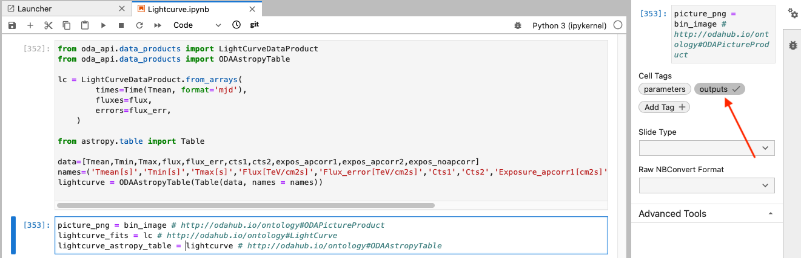
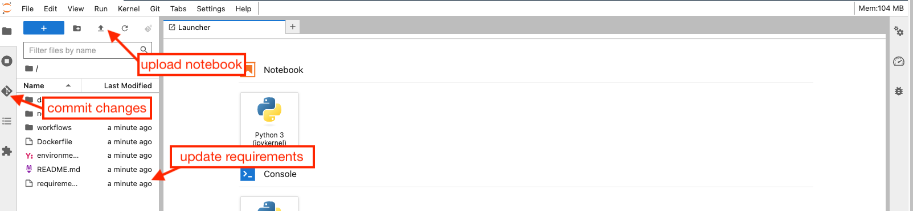
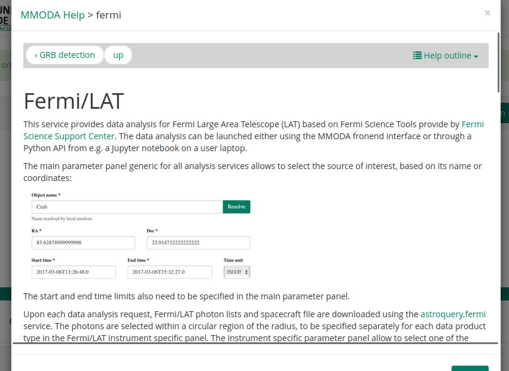
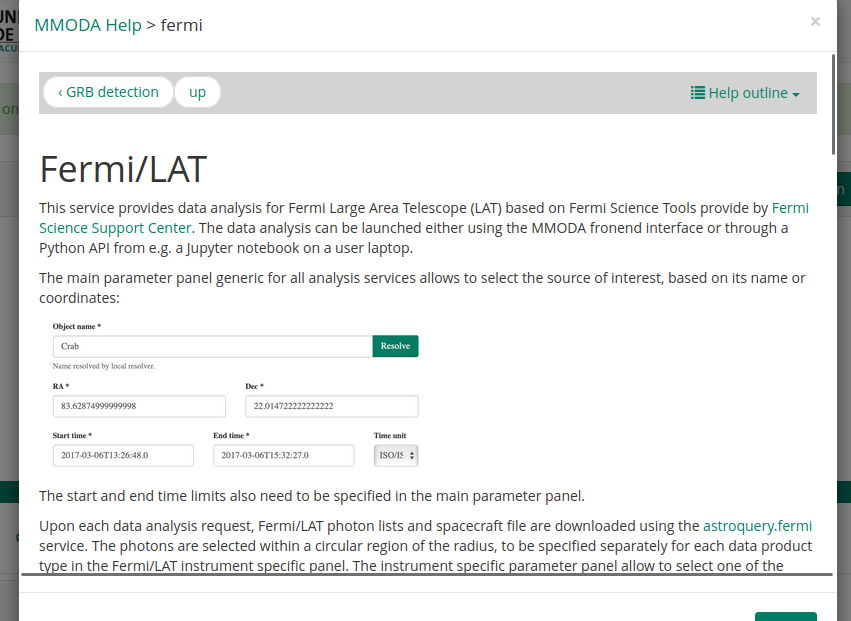
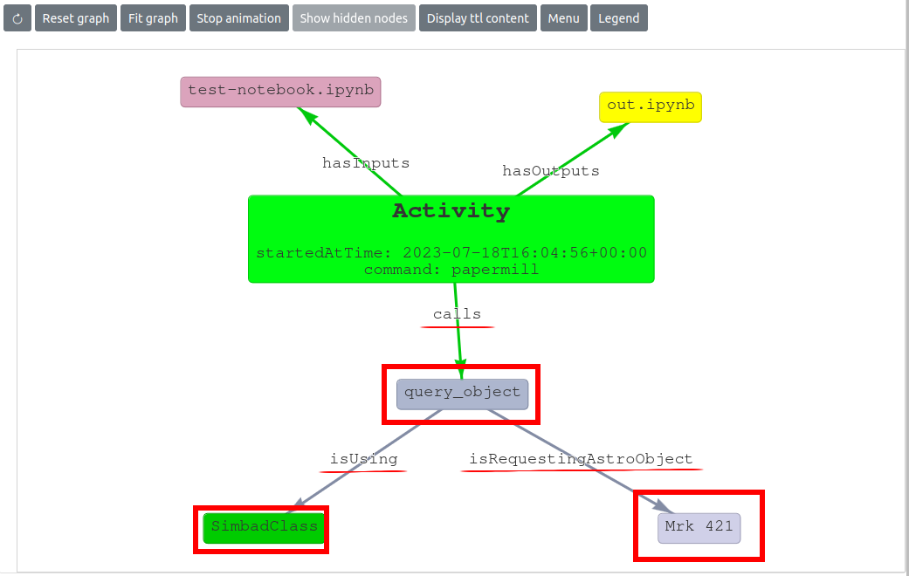

MMODA workflow development Guide #
The MMODA platform provides access to the Astronomical Open Research Data Analysis Services (ORDAS). Good fraction of these services follow a simple scheme, they:
- access publicly available external astronomical data archives to fetch data relevant to specific source or source catalog,
- transform the fetched data using a workflow based on a Python notebook to derive a data product.
- display a preview of the data product on the MMODA frontend and/or return the data product to the user via Python API
The users of MMODA are encouraged to become its developers and add new ORDAS. This help page provides a step-by step instructions on how to add new services to MMODA .
Workflows are all things that can be computed, broadly speaking. For reproducibility, we want our workflows to be repeatable: producing the same output every time they are computed. This looks easy enough in first approximation, but might be harder to achieve than it seems when the workflow relies on external data and compute resources and has to yield an “up-and-running” ORDAS in an ever-evolving compute environment. This help page is also aimed at helping the developers in ensuring reproducibility and reusability of their workflows converted to ORDAS.
Build a repeatable parameterized workflow #
Suppose you have a jupyter notebook that derives some useful information (a lightcurve in the GeV gamma-ray band) on an astronomical source from data found in an astronomical data archive (in our example, it will be Fermi LAT data archive).
The first essential step in promoting the notebook to an ORDAS is to make the workflow of the notebook reusable by parameterizing it. For example, it is initeresting to enable generation of similar data products for different sources, by simply giving the source name or coordinates as input parameters to the workflow. It is also useful to explicitly tag the resulting data product (the lightcurve in our example) as the output, to make clear which of the numerous entities generated by the notebook is the final result. It is also possible to convert non-parametrized but strickly repeatable notebooks to services (for example, to assure reproducibility of a result published in a research publication), but this is less interesting since they always produce the same output data products.
How to designate input parameters and output cells of the notebook #
In MMODA we use the approach of papermill) to tag the notebook cells that contain the input parameters and the outputs. In your notebook, you may create two dedicated cells with the “parameters” and “outputs” tags. In the Jupyter Lab environment this can be done by clicking on the cogwheel sign on the right top, red arrow in the image below, and adding new tag as pointed by the second red arrow:
How to define input parameters in the dedicated parameters cell #
The variables defined in the dedicated “parameters” cell, will be the input parameters of the workflow. They will be visualized in the frontend of the service and it will be possible to provide these parameters via the service API. For example, in the image of the parameters cell in our example (see above)
- the names of the declared variables will be used as parameter names in the MMODA service (except the default parameters, see below). For example, the
Source_region_radiusvariable will be visible in the frontend as a query parameter with the same name. It will appear with a default value assigned to it (2.in the example notebook). - if not annotated, the types of the inputs parameters are determined based on the parameter default value (would be
floatfor theSource_region_radiusparameter). - otherwise, it is possible to customize the parameter by adding annotation the input parameter with an MMODA ontology item as a comment (after the hash sign,
#http://odahub.io/ontology#AngleDegreesin the reference example of theSource_region_radiusparameter. This may be useful for checking the validity of the user inputs. For example, the sky angle in degrees (defined by the#http://odahub.io/ontology#AngleDegrees) should be a float number and can take values between 0 and 360. - it also possible to directly express additional restrictions on the parameter value by using annotation properties
oda:lower_limit,oda:upper_limit,oda:allowed_value. For example, to define an angle with maximum value of 10deg, the annotation will be# oda:AngleDegrees; oda:upper_limit 10.Another example is a string parameter with possible values of “b”, “g”, “r”:oda:String; oda:allowed_value 'b','g','r'. - to explicitly express units of the parameter, one can use predefined
oda:ExpressedInUnitsubclasses, like# oda:Float; oda:GeVor annotation property, like# oda:Float; oda:unit unit:GeV.
Default parameters #
Several default common parameters are always set by the MMODA frontend. These include:
| Type annotation | Parameter default name |
|---|---|
| http://odahub.io/ontology#PointOfInterestRA | RA |
| http://odahub.io/ontology#PointOfInterestDEC | DEC |
| http://odahub.io/ontology#StartTime | T1 |
| http://odahub.io/ontology#EndTime | T2 |
| http://odahub.io/ontology#AstrophysicalObject | src_name |
The default parameters are common to all workflows in the MMODA ecosystem. They appear at the top of the MMODA frontend as shown below:

If the notebook contains parameters anotated with these types, their names will be automatically considered as the parameters appearing in the common parameter field of all services. If some of them are ommited, they will be added to the list of workflow parameters automatically.
Note that both source name and source coordinates are passed to the workflow, and in principle there is no guarantee the coordinates are that of the source. We leave it up to the workflow developer to reconcile these parameters. Please explain the logic in the associated help page of the service.
Adding annotations the entire notebook #
Annotations can apply to parameters or entire notebook. In both cases they are kept in the notebook cell tagged parameters.
For example:
# oda:version "v0.1.1"
# oda:reference "https://doi.org/10.1051/0004-6361/202037850"
source_name = "Crab" # oda:AstrophysicalObject
reference_energy = 20 # oda:keV
Adding external resource annotations #
In case your notebook explicitly calls some external resources, such as S3 storage or compute cluster this should be reflected in the annotations in the notebook cell tagged parameters. Below is the list of the resource annotations supported currently:
oda:S3 - S3 storage
oda:Dask - Dask compute cluster
All kinds of resources may have resourceBindingEnvVarName property. If the resource is available the corresponding enviroment variable stores json with the credentials needed to access the resource.
For example, in the code below we declare the S3 storage:
# oda:usesRequiredResource oda:MyS3 .
# oda: MyS3 a oda:S3 .
# oda: MyS3 oda:resourceBindingEnvVarName "MY_S3_CREDENTIALS" .
In the code below we initialize the S3 storage session using the credentials provided by means of the environment variable:
import json
import os
from minio import Minio
credentials_env = os.environ.get('MY_S3_CREDENTIALS')
if credentials_env:
credentials=json.loads(credentials_env)
client = Minio(
endpoint=credentials["endpoint"],
access_key=credentials["access_key"],
secret_key=credentials["secret_key"],
)
In the example below we declare dask cluster resource requirements in the parameter cell
# oda:usesRequiredResource oda:MyDaskCluster .
# oda: MyDaskCluster a oda:Dask .
# oda: MyDaskCluster oda:memory_per_process "2G" .
# oda: MyDaskCluster oda:n_processes "16" .
# oda: MyDaskCluster oda:resourceBindingEnvVarName "MY_DASK_CREDENTIALS" .
Here memory_per_process and n_processes define minimal requirements to the resource.
In the code below we open the dask cluster session
import json
from dask.distributed import Client
credentials_env = os.environ.get('MY_DASK_CREDENTIALS')
if credentials_env:
credentials=json.loads(credentials_env)
client = Client(address=credentials["address"])
Adding token annotations #
In case your notebook uses token to access some resources this should be reflected in the annotations in the notebook cell tagged parameters in the following way:
# oda:oda_token_access oda:InOdaContext .
The above expression enables the standard mechanism to supply token using oda context variable. Then the token can be accessed from the code in the following way:
from oda_api.api import get_context
token = get_context()['token']
However, we recommend instead using higer level oda_api.token API, which also provides token validation and token discovery method as options. The code above is eqivalent to the following higher level code
from oda_api.token import discover_token, TokenLocation
token = discover_token(allow_invalid=True, token_discovery_methods=[TokenLocation.CONTEXT_FILE])
Below is the entire list of token locations supported:
class TokenLocation(Enum):
ODA_ENV_VAR = "environment variable ODA_TOKEN"
FILE_CUR_DIR = ".oda-token file in current directory"
FILE_HOME = ".oda-token file in home"
CONTEXT_FILE = "context file current directory"
By default, token validation is enabled and the attempts are made to load the token from all the supported locations in the order they appear in the TokenLocation class.
How to annotate the notebook outputs #
A cell tagged “outputs” defines the data product(s) that will be provided by the service:

The outputs may be strings, floats, lists, numpy arrays, astropy tables etc. They may be also strings which contain filenames for valid files. If they do, the whole file will be considered as the output. Similar to the “parameters” cell, the “outputs” cell should contain the definitions of the output variables followed by equality that assigns values to them and a comment that defines their type (for example, the variable lightcurve_astropy_table in the example shown above takes the value lightcurve which is an astropy table. the comment field # http://odahub.io/ontology#ODAAstropyTable specifies this in terms of the MMODA ontology. If you want to give more detailed description of the notebook input and output, use terms from the pre-defined ontology described here.
There is also one special type of the output annotation # http://odahub.io/ontology#WorkflowResultComment. An output variable of string type, annotated with it will be returned as a comment, shown in yellow field upon completion of the job.
Quering external astronomical data archives from a notebook #
It is very likely that your analysis workflow needs to access astronomical data retrievable from an external archive. A good practice is to avoid placing large volumes of data direcly into the container where the analysis notebook runs (this would overload the renkulab.io platform which we use for new service deployment). A better approach is to query the relevant data using online services, for example, Table Access Protocol (TAP) services, or services available through the astroquery Python module. In our example case of Fermi/LAT analysis, we use the astroquery.fermi module to query the archive of publicly available Fermi/LAT data from Fermi Science Support Center in the Cell 4 of the notebook Lightcurve.ipynb.
Of course, relying on external data archives and data access services may pose a problem for reproducibility of results and potentially for the service operational stability. The external services may have downtime period, they may be upgraded and change their API etc. We leave it to the developer to make sure the requests to external services are operational and reproducible. We encourage the developers to supply tests (see guide) that will be automatically executed from time to time during service operations and are supposed to always yield exactly the same results. If this is not so, this may signal a problem with non-availability of some external services, in this cases you, as the service developer, will be alerted and invited to investigate the origin of the problem. It may also happen that the notebook would not produce the exactly the same result every time but still be reproducible (see motivation on the difference between reproducibility and repeatability).
Handling exceptions #
It can happen that your analysis workflow is expected to produce no data products in some cases, for example, if there is no data for a specified source and time interval, if the parameters specified by the user have wrong format, or in other “exceptions” In this case, it would be good to inform the user what happened. This can be done using the raise RuntimeError() method directly in the notebook, as shown below:

Don’t worry if you do not succeed to foresee all possible exceptions at the initial development stage. If unforeseen exceptions would occur when the service is already deployed and available to users, each time an unforeseen exception occurs, you will be notified and invited to patch your notebook to handle this exception (perhaps raising a new RuntimeError() case in the appropriate cell).
How to add a test to the notebook #
It is a good practice to test the developed notebook. This allows to make sure that the code remains valid in the future. A test is implemented as another notebook, except that name of the notebook starts with “test_”. The notebook should call other notebooks and check that the output matches expectations. See an example of such a test here.
Reporting progress for long running tasks #
In case your computation task runs considerable amount of time and can be split into stages consider reporting task progress using ODA API class ProgressReporter:
from oda_api.api import ProgressReporter
pr = ProgressReporter()
pr.report_progress(stage='simulation', progress=0, substage='step 1')
# implement step 1
pr.report_progress(stage='simulation', progress=50, substage='step 2')
# implement step 2
renkulab.io #
The parameterized workflow formulated as a Python notebook can be converted into a service provided by MMODA by a bot that scans a specific location astronomy/mmoda in the project directory on the renkulab.io collaborative platform. Creating a new project in this directory will make it visible for the bot. In our example of Fermi/LAT lightcurve workflow, it is in the fermi subdirectory of astronomy/mmoda.
To proceed along this way, you first you need to make sure your notebook runs correctly in the renkulab.io environment. You can start a new project in the astronomy/mmoda by clicking on the “Creat new project” button.
You will need to choose the name of the new project. This name will be the name of your service appearing at the MMODA frontend and discoverable via MMODA API. Place your project in the astronomy/mmoda namespace by specifying this in the “Namespace” field as shown below:

Choose the “Python 3” template for the project and then click “Create project” button:

To start working on the newly created project, you can launch an interactive Jupyter lab session by clicking on the “Start” button:

Once in the Jupyter lab environment, you can update the project by uploading the notebook that you intend to promote to a service:

Your notebook most probably imports some python packages that are not installed by default in a generic Python environment on renkulab.io. To add necessary packages, you need to update the requirements.txt and possibly environment.yml files with the packages you need:
In the example of Fermi/LAT analysis we are considering, packages astropy, matplotlib and astroquery packages will be needed. They can be added in the requirements.txt file as shown above.
Once you are done with uploading your notebook and adding missing Python packages into the requirements.txt file, you can commit changes to your project by going to the GitLab tab in the Jupyter lab interface. You will see files that have been added or modified appearing as such in the dedicated sub-panel as shown below:

Promote these files to the “Staged” state by clicking at the “+” signs next to them and commit changes to your project by clicking at the “Commit” buttong just below the file list. Next, push the comitted changes to the Gitlab by pressing the “push” button (see the screenshot above).
Now the CI/CD of the Gitlab will generate a new container in which all necessary Python packages and the notebook to be promoted to a service will be available. This may take a few minutes. You can test this new container in operation if you start a new interactive session on renkulab.io, using the container produced from your latest commit.
If the notebook runs as expected and produces correct outputs, you may proceed to the next stage and deploy a new service.
Publish your workflow as an MMODA service #
If you project is in the /astronomy/mmoda/ namespace, it is straightforward to convert it into a MMODA service. All you need to do is to add a live-workflow as a topic at the project Gitlab that you can access by clicking on the “GitLab” button at the main project page on renkulab.io:
At the GitLab webpage, go to the “Settings” section, the “Topic” field is in the “General” settings:

Note that you may add multiple topics in this field. In the example of Fermi/LAT shown above, there is an additional topic “MM Gamma-rays” that helps MMODA users to classify workflows by the messenger and waveband types. Any topic which starts with “MM " (note the space) will be shown as a messenger label in MMODA, excluding the “MM " prefix. The additional topic will appear in the name of the tab of your workflow on MMODA frontend. The topics associated to your project are visible right below the project name on the Gitlab pages:
Once the project is associated to the live-workflow topic, it becomes visible to a bot that periodically scans the Gitlabs of the projects in the astronomy/mmoda domain, looking for new or modified “live” workflows that propose themselves as online services for MMODA. The bot will try to convert your notebook into a service and if this works, it will automatically add the new service MMODA (by default, on to its staging instance). You can monitor the progress of the bot work if you visit the “COntinuous Integration / Continuous Development” (CI/CD) section of the GitLab page of your project. It will show that a pipeline is in progress, both on the build of the updated renkulab project container image and on the “External” MMODA side:
Once the deployment is finished, you will recieve an email similar to this:
You may now connect to the MMODA frontend to test the functionalities of your service, check the correctness of appearance and format of the input parameters that you have specified in the parameters cell of the notebook, check the formatting and correctness of the data products that are produced upon pressing the “Submit” button on the frontend etc:

Note that some of the input parameters in the example of the Fermi/LAT Lightcurve.ipynb notebook appear as multiple choice parameters with pre-defined values, while others are query fields. For some of the parameters, units are specified just below the query window. The names of the parameters are the names of the variables defined in the parameters cell of the notebook (see the screenshot of the parameters cell in the section above of this help page. Have a look in the example how this is regulated with parameter annotations.
If the outputs cell of your notebook contains multiple data products, they will be shown as a list at the MMODA frontend, as shown above. The names of the list items correspond to the names of the variables defined in the outputs cell. Each item of the list can be previewed or downloaded by clicking on the “View” button. The preview will depend on the type of the data product that has been specified after the comment hash # tag in the outputs cell.
You can explore different examples of the notebooks converted to services in the astronomy/mmoda domain on renkulab.io, to see how to format the inputs and outputs. If unsure, first take a look on this simple repository. You can also experiment with further possibilities exploring the ontology of the MMODA parameters and data products.
By default, all notebooks residing in the root of the repository (except the ones named as test_*.ipynb) will be converted to separate data-products. If notebooks are in the subdirectory, one needs to add the configuration file mmoda.yaml with
notebook_path: "subfolder/path". It’s also possible to include only some notebooks by putting into mmoda.yaml e.g. filename_pattern: "prefix_.*" to define the notebook name regex pattern.
To add a help for the workflow one have to create a file mmoda_help_page.md in the root of the repository. This file will be converted by the bot to the help page, associated with the corresponding instrument tab in the MMODA platform interface.
 

The file aknowledgemets.md is used to edit the acknowledgements text, which is shown at the bottom of the products window. The default text refers to the renku repository, in which the workflow was created.
Support the workflow development via renku plugin #
To support the development of workflows in Renku, a set of dedicated funcitonailities, provided as Renku plugins, are made available. Specifically, these plugins aim to achieve the following:
- Offer a visualization of the project’s Knowledge Graph (
renku-graph-visplugin) - Intercept calls to
astroqueryfunctions and store them in the project’s Knowledge Graph (renku-aqs-annotationplugin)
See below how to install these plugins, which are not available by default.
Visualizing project Knowledge Graph with renku-graph-vis plugin
#
This plugin provides a graphical representation of the renku repository’s knowledge graph, possibly from within the renku session.
The plugin provides two CLI commands:
displayto generate a representation of the graph over an output imageshow-graphto start an interactive visualization of the graph over the browser
Furthermore, the plugin provides an interactive graph visualization feature for real-time monitoring during a renku session. To initiate or access the live graph visualization during your session, simply click on the Graph icon located on the main page, as shown in the image below.
The primary benefit introduced is the ability to have a live overview of the ongoing development within an interactive Renku session. This can be seen within the animation below, where the graph is automatically updated with information about the execution of a notebook upon its completion.

This visualization also includes the ODA ontology, providing valuable insights into the types of entities within it that are known to the ontology, and therefore helping during the workflow development. The image below displays a graph where the ODA ontology has been imported, and it can be seen that the SimbadClass node is an instance of the AstroqueryModule class, while Mrk 421 is an instance of the AstrophysicalObject class.
More technical details are presented in the README of the repo page: https://github.com/oda-hub/renku-graph-vis/
Installation #
The plugin can be installed via pip on your own environment:
pip install renku_graph_vis
Alternatively, it can be made available within a Renku session by adding it in the list of requirements of the Renku project, within your requirements.txt file.
Tracking access to astronomical archives and services in the project Knowledge Graph by using renku-aqs-annotation plugin
#
This plugin intercepts several key astroquery methods and stores annotations containing information about the calls to these methods (like the arguments used in the call) to the project’s Knowledge Graph: https://github.com/oda-hub/renku-aqs-annotation
In the image below, the information added to the project Knowledge Graph is highlighted. Specifically, it can be seen that during a papermill run of the test-notebook.ipynb notebook (that produced out.ipynb as an output notebook) a call to the astroquery method query_object, via the Simbadclass, has been detected. This notebook is requesting the object Mrk 421 object. The hightlighed labels on the edges provide information about the relationship between the two nodes: during the papermill execution, a call to the query_object method is executed (call label) and in turn, this requests the Astrophysical Object Mrk 421.

Installation #
The plugin can be installed either via pip on your own evironment:
pip install renku_aqs_annotation
Just like the renku_graph_vis plugin, the renku_aqs_annotation plugin can be made available within a Renku session by adding it to the list of requirements in your requirements.txt file for the Renku project.
Inform MMODA team and suggest automatic test cases to ensure service stability #
Please contact MMODA team (see contact form) to inform that you have created a new Open Research Data Analysis Service (ORDAS). We will check the functionalities and stability of your service, and we can inform the user community on availability of this new service. We will also ask you to suggest automatic tests of service operations that will be performed from time to time, to make sure your service does not break with future updates or because of unavailability of external services providing the input data for your analysis workflow. We can also add acknowledgements to the data providers and to you as the workflow developer.